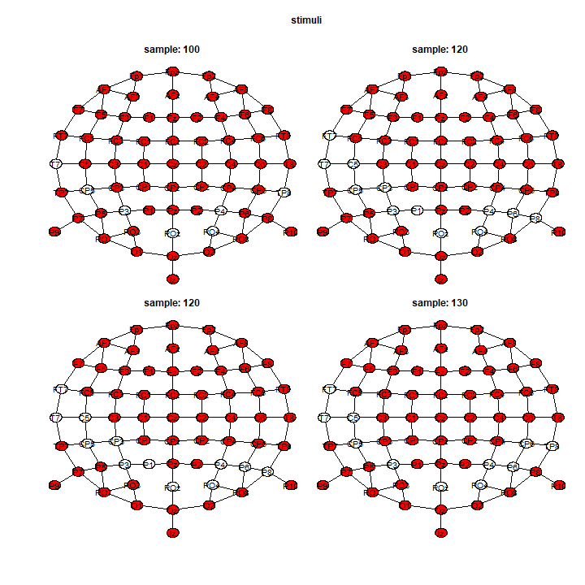

vignettes/download-example-cheval.Rmd
download-example-cheval.RmdIn the following tutorial, we download EEG data and reanalyze the data in Cheval et al. (2018). This dataset is stored in the zenodo repository as .edf files. It produces a cluster-mass test (Maris and Oostenveld 2007) that controls the family-wise error rate over the all times-points and all channels of full scalp EEG data.
We need several packages including tidyverse (Wickham et al. 2019), edf (Henelius 2016), abind (Plate and Heiberger 2016), readxl (Wickham and Bryan 2019), permuco4brain (Frossard and Renaud 2020) and future (Bengtsson 2020):
We download the data in a temporary files before unzipping the .edf files.
temp_zip <- tempfile()
temp_edf <- tempfile()
download.file("https://zenodo.org/record/1169140/files/ERP_by_subject_by_condition_data.zip",temp_zip)
unzip(zipfile = temp_zip, exdir = temp_edf)Then, we store the names of the files in a data frame using:
df <- data.frame(filename = list.files(paste0(temp_edf,"/raw_data/")),
stringsAsFactors = F)If your are not familiar with EEG .edf files, you can explore the first one using:
edf1 <- read.edf(file.path(temp_edf,paste0("raw_data/",list.files(paste0(temp_edf,"/raw_data/"))[1])))We download information on the subject and we only keep the centered measure of “Moderate to Vigorous Physical Activity” (MVPA) as between subject covariates:
We create the design from the filenames and we join the “between”-subject variables. Moreover, we keep only the "Round" stimuli as neutral shapes.
df<-
df%>%
group_by(filename)%>%
separate(filename,into = c("participant","neutral_stim","av","action","shape","edf"),remove = F)%>%
select(-edf,-av)%>%
left_join(df_bw,by=c("participant"="subject"))%>%
filter(!shape%in%c("Carre","Neutre"))We import the .edf files and retrieve only the signals:
df<-
df%>%
mutate(edf = map (filename,function(ii){
path <- file.path(temp_edf,paste0("raw_data/",ii))
read.edf(path)
}))%>%
mutate(signal = map(edf,function(listi){
listi$signal%>%
map(function(channel)channel$data)%>%
as.data.frame()%>%
as.matrix()
}))%>%
ungroup()We compute the signals relative to the neutral "Round" shapes within each participant:
df<-
df%>%
select(participant,shape,action,mvpa_c,signal)%>%
pivot_wider(names_from = shape,values_from = signal)%>%
mutate(PA_rel = map2(AP,Rond,`-`),
Sed_rel = map2(SED,Rond,`-`))%>%
select(-AP,-Rond,-SED)%>%
pivot_longer(PA_rel:Sed_rel,names_to = "stimuli", values_to = "signal")We unlink() the temporary files:
We create the 3D array that stores the signals:
We create the dataframe that stores the design:
design<-
df%>%
select(participant, action, stimuli,mvpa_c)%>%
as.data.frame()We download the position of the channels from biosemi:
temp_xl <- tempfile()
download.file("https://www.biosemi.com/download/Cap_coords_all.xls",temp_xl,mode="wb")
coord <- read_xls(path=temp_xl, sheet = 3,skip = 33)
unlink(temp_xl)We clean the data from biosemi and sort it accordingly to the third dimension of the signal array:
coord<-
coord%>%
select(channel = Electrode, x= `x = r sin<U+03B8> cosf`,
y = `y = r sin<U+03B8> sinf`, z = `z = r cos<U+03B8>`)%>%
filter(!is.na(x),!is.na(y),!is.na(z))%>%
mutate(channel = as.character(channel))%>%
mutate(channel = if_else(channel=="Iz (inion)","Iz",channel),
channel = if_else(channel=="T7 (T3)","T7",channel),
channel = if_else(channel=="T8 (T4)","T8",channel),
channel = if_else(channel=="Afz","AFz",channel))%>%
arrange(match(channel,dimnames(signal)[3]))The graph is computed using \(\delta =35\) as the maximal distance defining adjacency:
graph <- position_to_graph(coord, delta = 35, name = "channel")We may want to save the 3 objects: signal, design and graph.
# save(signal,design,graph,file = "signal_design_graph.RData")The plan() function from the future package handles multi-cores computing. Finally, we run the permutation tests using:
plan(multisession)
clustermass <- brainperm(signal ~ action*stimuli*mvpa_c + Error(participant/(action*stimuli)),
data = design, graph = graph)It will take around 1 to run the 7 tests on a modern computer.
Once it finished, we visualize the results using the image()function to produce a heat-map.
image(clustermass, effect = 2)We have a spatial representation, for 1 particular sample, using the plot() function:

In addition, the vignette Figure using ggplot2 shows more examples for figures that can be customize for publication. Finally, you can extract all the results by specifying table_type = "full" in the summary(). It produces a list of 7 data.frames (1 per effects) with 1 row per channel \(\times\) sample (\(64 \times 411 = 26304\))
full_table <- summary(clustermass, table_type = "full")Bengtsson, Henrik. 2020. A Unifying Framework for Parallel and Distributed Processing in R Using Futures. https://arxiv.org/abs/2008.00553.
Cheval, Boris, Eda Tipura, Nicolas Burra, Jaromil Frossard, Julien Chanal, Dan Orsholits, Remi Radel, and Matthieu P. Boisgontier. 2018. “Avoiding Sedentary Behaviors Requires More Cortical Resources Than Avoiding Physical Activity: An EEG Study.” Neuropsychologia 119: 68–80. https://doi.org/10.1016/j.neuropsychologia.
Frossard, Jaromil, and Olivier Renaud. 2020. Permuco4brain: Extension of Permuco on Time-Space Data, Like Full Scalp Eeg. https://github.com/jaromilfrossard/permuco4brain.
Henelius, Andreas. 2016. Edf: Read Data from European Data Format (EDF and EDF+) Files.
Maris, Eric, and Robert Oostenveld. 2007. “Nonparametric Statistical Testing of EEG- and MEG-Data.” Journal of Neuroscience Methods 164 (1): 177–90. https://doi.org/10.1016/j.jneumeth.2007.03.024.
Plate, Tony, and Richard Heiberger. 2016. Abind: Combine Multidimensional Arrays. https://CRAN.R-project.org/package=abind.
Wickham, Hadley, Mara Averick, Jennifer Bryan, Winston Chang, Lucy D’Agostino McGowan, Romain François, Garrett Grolemund, et al. 2019. “Welcome to the tidyverse.” Journal of Open Source Software 4 (43): 1686. https://doi.org/10.21105/joss.01686.
Wickham, Hadley, and Jennifer Bryan. 2019. Readxl: Read Excel Files. https://CRAN.R-project.org/package=readxl.